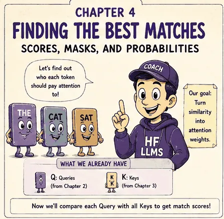
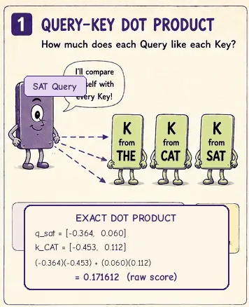
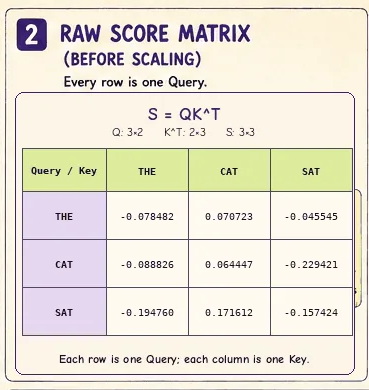
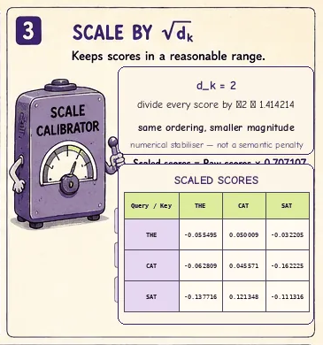
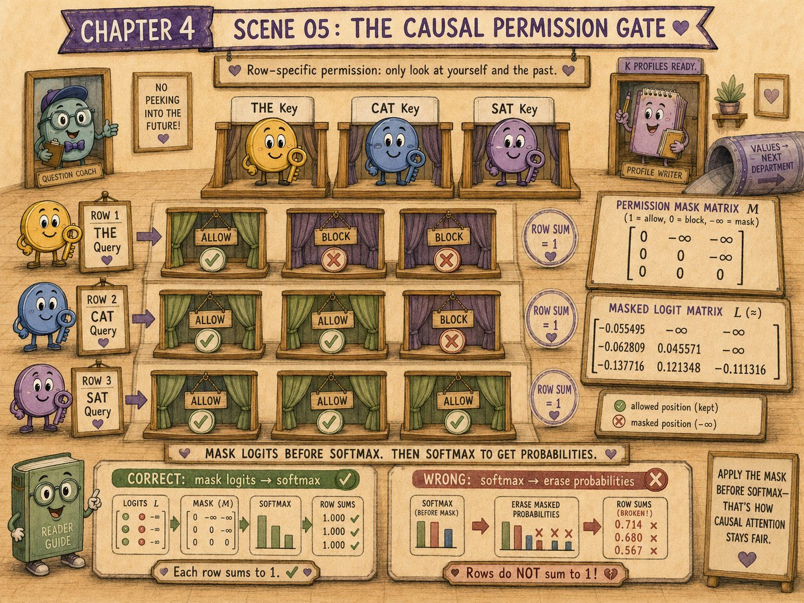
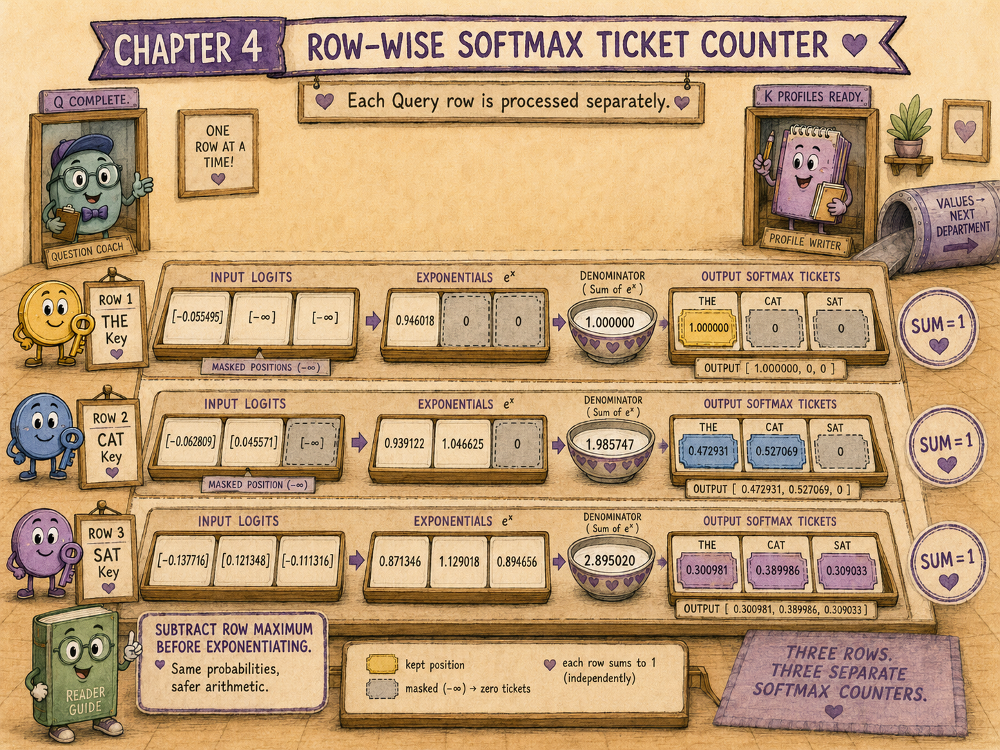
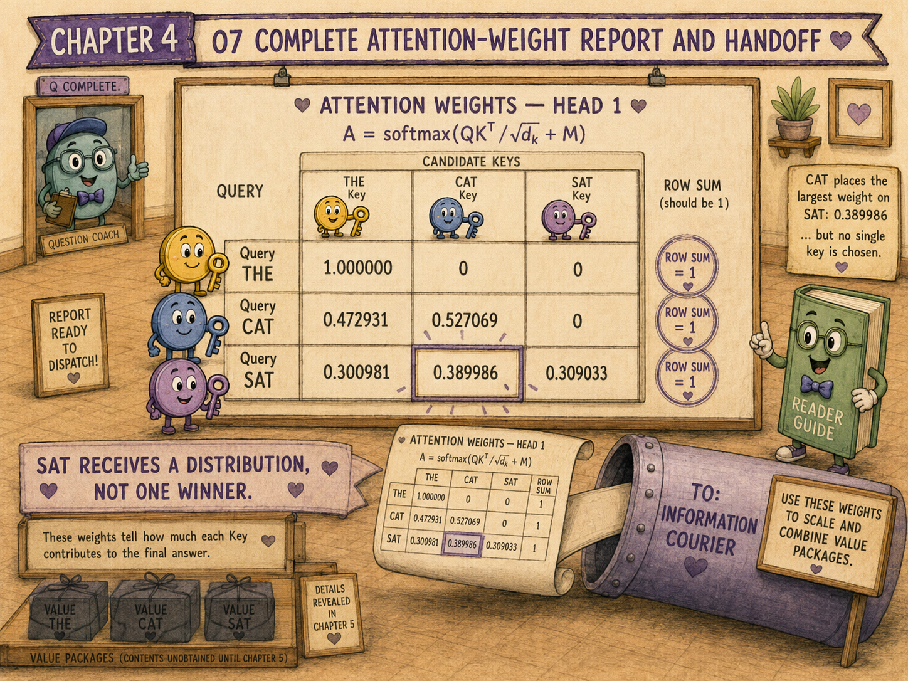
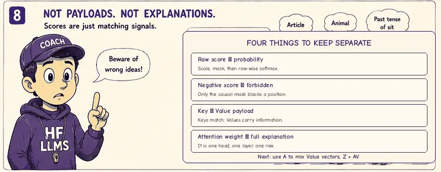

The previous chapters created two learned views of every token state:
and:
A Query says what one token position is looking for. A Key says how one token position should participate in matching.
But the model still needs to answer:
How strongly should each Query attend to each available Key?
That answer is produced in four stages:
Queries and Keys do not move information by themselves. They produce weights that decide where information will later come from.
SAT arrives with the Query created in Chapter 2:
The matching desk has three available Keys from Chapter 3:
The rows belong to:
SAT does not choose a single Key immediately. Its Query is compared with every allowed Key.
For one candidate position (j), the raw compatibility score is:
The matching desk produces one number per candidate.
For any querying position (i) and candidate position (j):
If the vectors have width (d_k), then:
A dot product multiplies corresponding coordinates and adds the results.
For SAT and THE:
For SAT and CAT:
For SAT and itself:
So SAT's raw score row is:
The largest raw score is the score for CAT.
Raw attention scores are not probabilities and do not need to lie between 0 and 1.
A negative score can still receive substantial attention if it is large relative to the other allowed scores in the same row.
Softmax cares about relative differences, not whether every input is positive.


The complete Query matrix is:
The complete Key matrix is:
To compare every Query with every Key, transpose (K):
Then calculate:
Using the rounded Query and Key values from the previous chapters:
Each row belongs to a Query. Each column belongs to a Key.
| Key: THE | Key: CAT | Key: SAT | |
|---|---|---|---|
| Query: THE | -0.078482 | 0.070723 | -0.045545 |
| Query: CAT | -0.088826 | 0.064447 | -0.229421 |
| Query: SAT | -0.194760 | 0.171612 | -0.157424 |
For three tokens and a Query/Key width of two:
Therefore:
and:
So:
More generally, for (n) token positions:
and:

The Transformer does not normally send the raw dot products directly into softmax. It first scales them:
Why?
As the vector width (d_k) grows, a dot product adds more products:
Under a simplified assumption that the coordinates are independent, centred, and have similar variance, the variance of that sum grows roughly in proportion to (d_k). Its standard deviation therefore grows roughly like:
Large-magnitude logits can push softmax into a very sharp region where one position receives almost all the weight and the others receive almost none. That can make gradients through softmax less useful during training.
Dividing by (\sqrt{d_k}) keeps the score scale more stable as the head width changes.
The scaling factor is not a semantic penalty. It is a numerical stabiliser for the logits entering softmax.
In our example:
so:
The scaled score matrix is:
Scaling changes the distances between logits but preserves their ordering within a row because every score is divided by the same positive number.

Our running model is a causal language model. A token may use information from:
It may not use information from future positions.
For the sequence:
THE CAT SAT
THE may attend only to THE.
CAT may attend to THE and CAT.
SAT may attend to THE, CAT, and SAT.
We represent this rule with a causal mask (M):
The zeros leave allowed scores unchanged. The (-\infty) entries eliminate forbidden scores before softmax.
Add the mask to the scaled scores:
For our example:
We will call (L) the matrix of masked attention logits.
Setting a forbidden probability to zero after softmax is incomplete because the remaining probabilities would no longer sum to 1 unless they were renormalised.
The standard approach removes forbidden positions at the logit stage. Since:
those positions naturally receive zero probability during softmax.
Causal masking is based on position, not token identity.
The rule for row (i) and column (j) is:
This means the same Key can be visible to a later Query and invisible to an earlier Query.
For example, SAT's Key is:
Nothing about SAT's Key itself changed. Only the permission relationship changed.

For one Query row (i), softmax is:
Softmax is applied independently to each row.
The resulting matrix is usually called the attention-weight matrix:
Every row of (A):
CAT's allowed logits are:
Exponentiating gives approximately:
Their sum is:
Therefore:
CAT gives slightly more weight to itself than to THE.
SAT can see all three positions. Its logits are:
Exponentiating gives approximately:
Their sum is:
Therefore:
The largest weight goes to CAT, but the attention is distributed across all three allowed positions.

Applying row-wise softmax to the masked logits gives:
Check each row:
The matrix now answers:
For every Query, how much influence should each allowed token position have in this attention head?
Each row represents a different search.
THE's Query asks one question.
CAT's Query asks another.
SAT's Query asks another.
They must each receive their own probability distribution over candidate Keys.
Applying one softmax over the entire (n\times n) matrix would mix unrelated searches and would not make each Query's weights sum to 1.
Adding the same constant (c) to every allowed logit in one row does not change the softmax result:
This is why implementations use a numerically stable form:
where:
Subtracting the row maximum prevents unnecessarily large exponentials without changing the probabilities.
The four stages can be written in one expression:
Read it from the inside out:

An attention matrix is mathematically observable, but it should not automatically be treated as a complete explanation of a model's behaviour.
A high weight tells us that a Value vector contributed strongly to this head's output at this layer and position. It does not by itself tell us:
Attention weights are part of the mechanism, not a guaranteed explanation of the entire network.
Compatibility is calculated with Keys:
not:
Values are used only after the weights have been calculated.
If:
then (QK) is generally not dimensionally valid. The required comparison is:
The normalisation is per Query row, not per Key column.
Attention usually produces a distribution, not an argmax. Several positions can contribute simultaneously.
Multiplying a forbidden logit by zero makes it zero, which may still receive positive softmax probability. Forbidden logits should be replaced by a very negative value, conceptually (-\infty).
With batches and multiple heads, the score tensor often has shape:
A common layout is:
for self-attention over a sequence of length (N).
The matrix multiplication is performed independently for each batch item and head, even when the hardware executes the work in one fused operation.
The mask is broadcast across whichever dimensions share the same causal rule.
The raw dot-product compatibility between Query (i) and Key (j).
So every Query row can take a dot product with every Key row, producing one score per Query–Key pair.
To keep dot-product logits at a manageable scale as the Query/Key width grows, preventing softmax from becoming unnecessarily saturated.
For Query position (i), Key position (j) is forbidden when (j>i).
It is set conceptually to (-\infty), and (e^{-\infty}=0).
Across the candidate Key positions in each Query row.
Not necessarily. Its weight depends on the other allowed logits in the same row.
for one self-attention head.
Queries and Keys create compatibility scores:
The scores are scaled:
Forbidden future positions are masked:
Softmax converts each row into attention weights:
For our three-token example:
These weights decide where to retrieve from.
They do not yet tell us what information is retrieved.
A strong match is useful only if the matched position has something to contribute.
Every token therefore creates a third learned representation:
The attention weights will mix those Value vectors:
That is the job of Chapter 5: